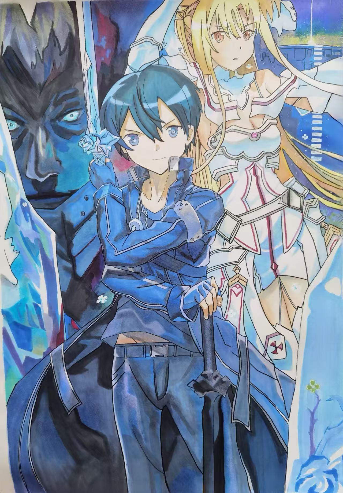
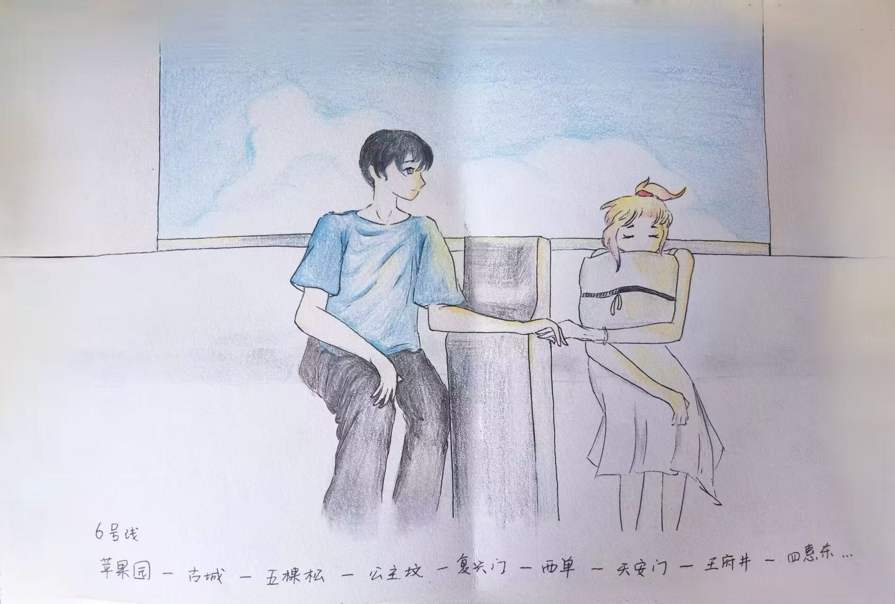
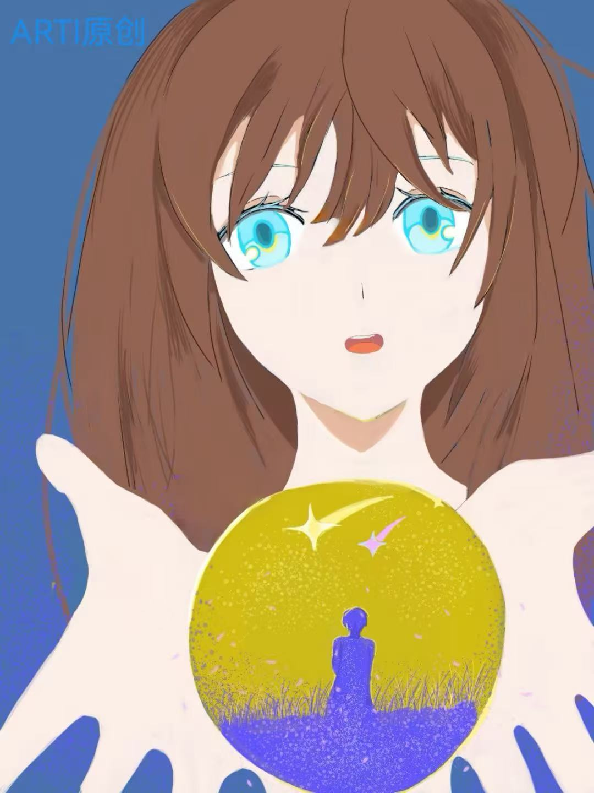

2023:
ARTI 18th
--2023年度生日作品
Arti系列2023原创作品
该画作纪念了短篇作品：
《最终的花海》，作品叙事剧情只尝试了一次，但是剧情问题突出，不论如何，都是一次全新的尝试。

动画作品
刀剑神域
的临摹，画风与原临摹海报相比更生动，较为讨喜。

该作品是送给好朋友的一份纪念礼物，以在北京的地铁路线为灵感，孕育而生。

这幅画在当时是用手机触屏绘画的，制作了很久，但是效果很是不错，选择在2023.1月发布。
点此回到主页